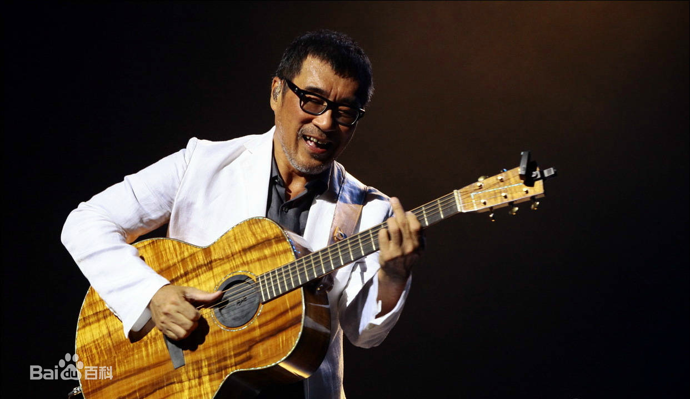
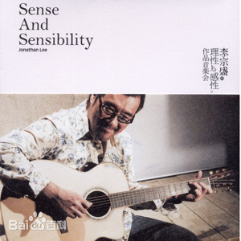
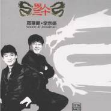
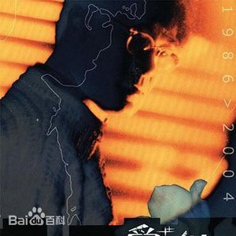
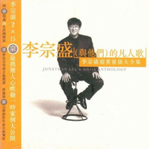
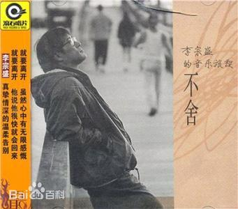
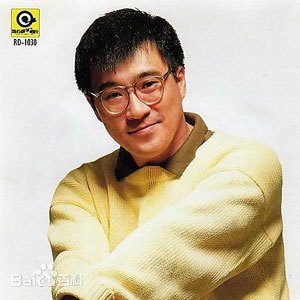
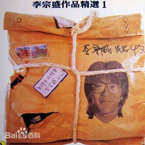

李宗盛（Jonathan Lee），1958年7月19日出生于中国台湾省台北市，中国台湾男歌手、词曲创作人、音乐制作人、制琴师。
1980年进入乐坛，以“木吉他合唱团”成员身份加入宝丽金唱片公司，出品《木吉他作品全集》。1982年正式进入唱片界，制作郑怡《小雨来的正是时候》。
1985年签约于滚石唱片公司。1986年发行首张个人专辑《生命中的精灵》。1992年主持中广电台节目《音乐人》，并应邀为电影《霸王别姬》创作并
演唱主题曲《当爱已成往事》。2000年获得金曲奖最佳制作人奖。2005年担任《电影之歌》音乐总监、总制作人、词曲创作人。2011年凭借歌曲《给自己的歌》
获得金曲奖最佳年度歌曲、最佳作曲、最佳作词三项大奖。2013年举办“既然青春留不住”世界巡回演唱会。2018年凭借歌曲《出城》获得2018年华人歌曲音
乐盛典的年度最佳作词。2019年凭借歌曲《新写的旧歌》获得第30届台湾金曲奖“最佳作词人”奖。
作为歌手，李宗盛创作并演唱了《凡人歌》《寂寞难耐》《真心英雄》《鬼迷心窍》《希望》《山丘》等歌曲；
作为音乐人，曾为陈淑桦、周华健、林忆莲、张信哲、赵传、辛晓琪、任贤齐、张艾嘉、莫文蔚、梁静茹等歌手创作歌曲、制作专辑；
他创作了《梦醒时分》《为你我受冷风吹》《我是一只小小鸟》《领悟》《爱的代价》等歌曲，制作了《心的方向》《跟你说听你说》《心事》《夜太黑》《十二楼的莫文蔚》等专辑。
基本信息
|
| 中文名 |
李宗盛 |
职业 |
歌手、词曲创作人、音乐制作人、制琴师 |
| 外文名 |
Jonathan Lee |
经纪公司 |
百娱传媒股份有限公司 |
| 别名 |
宗盛 |
代笔作品 |
凡人歌
寂寞难耐
鬼迷心窍
真心英雄
当爱已成往事 |
| 国籍 |
中国 |
主要成就 |
金曲奖最佳制作人、最佳作词作曲
金曲奖年度最佳歌曲
音乐风云榜杰出贡献奖
中国原创音乐榜最高成就奖
CCTV-MTV音乐盛典音乐特殊贡献奖 |
| 民族 |
汉族 |
| 出生年月 |
1958年7月19日 |
| 星座 |
巨蟹座 |
| 血型 |
A型 |
演艺经历
1986年1月，发行首张个人专辑《生命中的精灵》，《开场白》是其中的第一首歌。此外，童安格也在《没有人知道》一曲担任合音天使。同年，
制作潘越云《旧爱新欢》，出演电影《心锁》。1987年，出演电影《天蹦地裂》后改名为《灵芝异形》，制作周华健首张个人专辑《心的方向》。
1988年，主持警广电台节目《各说各话》，主持华视电视节目《综艺第一线》；参与拍摄电影《春秋茶室》。1988年7月，制作潘越云《情字这条路》
专辑。1989年1月，发行《李宗盛作品集》；同年，为陈淑桦制作专辑《跟你说听你说》，为台湾唱片业第一张销售过百万的华语专辑，专辑中由
李宗盛创作的歌曲《梦醒时分》也成为文化工业体制运作下日趋成熟的代表作。
1990年，为好友赵传制作《我是一只小小鸟》，与其他制作人共同制作林强第一张专辑《向前走》。1991年，发行专辑《凡人歌》；同年担任电影《莎莎嘉嘉
站起来》配乐工作，为成龙制作专辑《第一次》。1992年，主持中广电台节目《音乐人》。制作张艾嘉《爱的代价》专辑。率领滚石天王天后陈淑桦，周
华健，赵传首次赴北京，上海举办演唱会。同时为应陈凯歌导演的邀约为电影《霸王别姬》创作主题曲《当爱已成往事》。1993年9月，发行《希望》。10月
，和香港音乐人卢冠廷出版《我们就是这样》，收入《如风往事》《希望》以及上述2曲的演奏版，与林强合唱《只要为你活一天》的电影主题曲《台北孤儿》
第一次正式演唱台语歌曲，经典励志歌曲《真心英雄》出炉。同年为张信哲制作《心事》专辑，主打歌为《爱如潮水》。1994年6月10日，发行专辑《不舍》。
1996年1月，发行《李宗盛超重量级大全集》。制作《夜太黑》等专辑。1997年12月，发行《李宗盛24K黄金精选》。1998年2月22日，制作
《每个女人》等专辑。1999年11月1日，发行专辑《作品李宗盛》，并为梁静茹，莫文蔚，李玟等歌手制作专辑；制作发行由众多女歌手演唱的合辑
《李宗盛爱情大辞典》。
2000年，为张信哲制作《信仰》专辑，为梁静茹制作《勇气》专辑，为莫文蔚制作《十二楼的莫文蔚》专辑。2001年，为梁静茹制作《闪亮的星》专辑。
2002年，参与制作刘若英《Love And The City》专辑。2003年，为梁静茹制作《美丽人生》专辑，为周华健制作《忘忧草》专辑。2005年，为纪念中国
电影诞生100周年，国家广电总局电影频道节目中心发起音乐剧《电影之歌》，李宗盛担任《电影之歌》音乐总监，总制作人，词曲创作人；9月10日，
与周华健共同发行合辑《男人三十》。
2009年至2010年，与罗大佑、周华健、张震岳组成纵贯线乐团。发行《北上列车》、《南下专线》两张EP，《给自己的歌》出炉，收录在
《南下专线》中。2011年，为杨宗纬制作《原色》专辑。举办第一届李吉他校园创作大赛。11月24日，参与拍摄的喜剧电影《东成西就2011》在中国上映。
2012年12月20日，参与拍摄的动作喜剧电影《十二生肖》在中国上映。2013年7月6日，发行单曲《山丘》。2013年9月，举办“既然青春留不住”世界巡回演唱会。
2014年12月27日与28日，在台北小巨蛋返场首演“还是做个大叔好！”演唱会。2015年1月1日，参加2015年江苏卫视新年演唱会。
2016年1月22日，与李剑青与白安共同创作并发行“苹果2016新年电视广告宣传曲”《送你一首过年歌》；11月18日，发行“山丘Live Tour”演唱会实录专辑
《既然青春留不住，还是做个大叔好》。
2017年12月29日，李宗盛作词、作曲、演唱的《山丘》获第十届中国金唱片奖流行类最佳金曲奖。
2018年05月17日，李宗盛发行歌曲《新写的旧歌》；8月29日，凭借歌曲《出城》获得2018年华人歌曲音乐盛典的年度最佳作词。2019年6月29日，
凭借歌曲《新写的旧歌》获得第30届台湾金曲奖“最佳作词人”奖。

个人生活
- 1998年，与林忆莲于台北举行婚礼。
- 2004年，李宗盛与林忆莲协议离婚。
主要作品
音乐专辑
理性与感性作品音乐会
男人三十
爱情论-爱的代价
李宗盛与他的凡人们
不舍
1984-1989李宗盛作品集
生命中的精灵